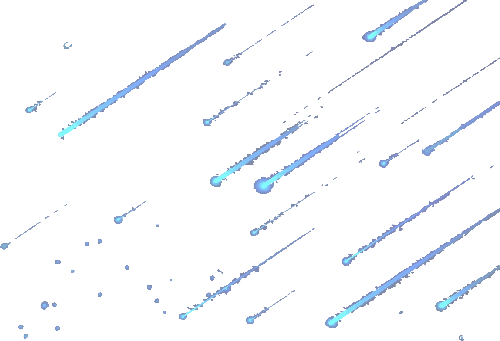
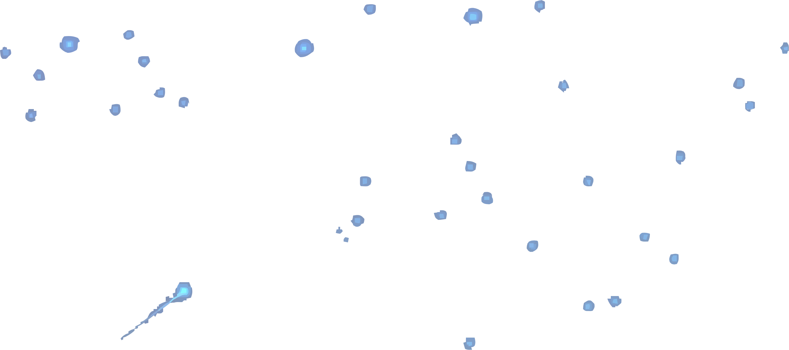

INFORMATION TECHNOLOGY COMPETITION
Innovating for a Sustainable Future
00
Days
00
Hours
00
Minutes
00
Seconds



IT Competition merupakan singkatan dari Information Technology Competition.
Acara tersebut merupakan salah satu acara tahunan dari 58 event DINUS FESTIVAL
yang diselenggarakan oleh Himpunan Mahasiswa Teknik Informatika Universitas
Dian Nuswantoro Semarang yang terdiri dari 2 lomba yaitu Web Design dan Web
Development. Tujuan dari lomba tersebut diantaranya menambah pengetahuan siswa,
dan mahasiswa di bidang IT serta untuk mempersiapkan strategi menghadapi kemajuan
teknologi saat ini, dan dimasa yang akan datang.
WEB DESIGN


WEB DEVELOPMENT